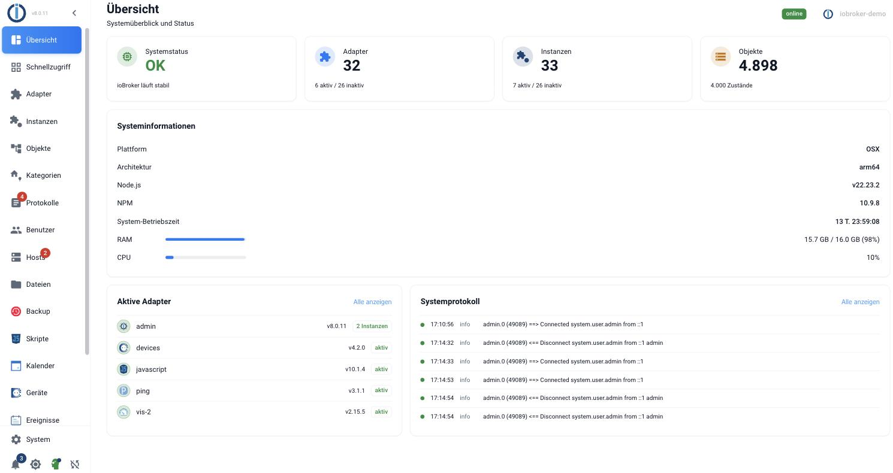

Adapter verbinden unterschiedliche Systeme
Adapter stellen die Verbindung zu Geräten, Diensten oder Protokollen her. Aus einem Adapter können eine oder mehrere Instanzen entstehen; deren Objekte und Zustände bilden die gemeinsame Datenbasis.
Verwaltung bleibt lokal
Die Admin-Oberfläche zeigt Systemstatus, installierte Adapter, laufende Instanzen, Objekte und Protokolle. Zusätzliche Cloud- oder Sprachdienste sind eigenständige Optionen und nicht automatisch Bestandteil der lokalen Installation.
Auf eHive One nur mit 2 GB
ioBroker ist auf eHive One der Variante mit 2 GB Arbeitsspeicher vorbehalten. Der tatsächliche Bedarf wächst mit Zahl und Art der Adapter, Instanzen und Visualisierungen.
Wichtig: Adapter gezielt auswählen, Zugangsdaten schützen, Updates prüfen und die Admin-Oberfläche nicht ungeschützt ins Internet stellen.